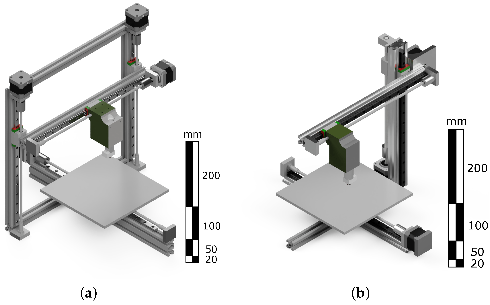

Imprimante 3D cu sistem cartezian
Imprimantele de tip cartezian sunt cele mai comune și folosesc un sistem bazat pe coordonate carteziene (X, Y, Z) pentru a controla mișcarea extruderului și a patului de imprimare.

Principiul de funcționare:
- Fiecare axă (X, Y, Z) este controlată independent de un motor pas cu pas.
- Deplasarea se face de obicei pe ghidaje liniare, iar mișcarea este transmisă prin curele (pentru X și Y) și șuruburi trapezoidale (pentru Z).
- Volumul de imprimare este o prismă rectangulară.
Avantaje:
- Simplitate mecanică: Ușor de construit, întreținut și modificat.
- Precizie ridicată: Datorită mișcării controlate pe axe individuale.
- Compatibilitate software: Majoritatea slicerelor (Cura, PrusaSlicer) sunt optimizate pentru imprimante carteziene.
- Cost scăzut: Este cel mai accesibil design pentru amatori și producători de imprimante DIY.
Dezavantaje:
- Viteză limitată: Greutatea extruderului în mișcare pe axe poate limita viteza de imprimare fără pierderea calității.
- Rigiditate: Poate necesita ajustări frecvente pentru a menține alinierile mecanice, mai ales pe modelele ieftine.
- Spațiu ocupat: În funcție de dimensiunea patului de imprimare, imprimantele carteziene pot ocupa mai mult spațiu.
Exemple populare:
- Prusa i3 MK4: Renumită pentru fiabilitate și calitatea imprimării.
- Ender 3: Model accesibil, preferat de începători.